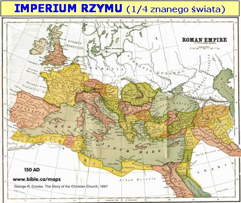

0 Wstęp do Apokalipsy
Jedyny Prawdziwy Bóg, Ojciec Pana Jehoszua jest Autorem poselstwa, które Chrystus objawił Janowi poprzez anioła.
„Wspomnijcie na sprawy dawne, odwieczne, że Ja jestem Bogiem i nie ma innego, jestem Bogiem i nie ma takiego jak Ja. (10) Ja od początku zwiastowałem to, co będzie, i z dawna to, co jeszcze się nie stało. Ja wypowiadam swój zamysł, i spełnia się on, i dokonuję wszystkiego, czego chcę.” (Izajasza 46:10-11).
„Objawienie Jezusa Chrystusa, które dał mu Bóg, aby ukazać sługom swoim to, co ma się stać wkrótce; to też wyjawił On za pośrednictwem zesłanego anioła swojego słudze swemu Janowi” (Objawienie 1:1).
Wydarzenia mające się stać wkrótce, krok po kroku, a nie za 2000 lat, jak nauczają spragnieni sensacji ludzie, głoszący nagłe BUM i wszystko na raz, rozsiewający apokaliptyczne wizje, cieleśni ludzie, wypatrujący sensacji w dniach im współczesnych.
Ludzie ci symbole odczytują tak jak im pasuje, najczęściej dosłownie…
W księdze Objawienie mamy zawarte wydarzenia rozgrywające się w historii, aż do powtórnego przyjścia naszego zbawiciela, Syna Bożego - Jehoszua.
Lud Boży żyjący w każdym czasie, kierowany duchem Bożym zapewne był w stanie te wydarzenia w otaczającym ich świecie rozpoznać.
„Chwałą Bożą jest rzecz ukryć, a chwałą królów rzecz zbadać.” (Przysłów 25:24).
Księga Objawienia jest księgą historyczną napisaną językiem symboli, które możemy odszyfrować, jedynie poprzez badanie całej Biblii, a zwłaszcza Starego Testamentu - wszystkie występujące symbole z księgi Apokalipsy są wyjaśnione i zinterpretowane w różnych miejscach Pisma Świętego, dlatego nie musimy, a raczej nie powinniśmy nic wymyślać - Słowo Boże samo się interpretuje, naszym zadaniem jest odnaleźć właściwe miejsca, prosząc w modlitwie o pomoc Boga, pamiętając o słowach:
„Co do mnie, to świadczę każdemu, który słucha słów proroctwa tej księgi: Jeżeli ktoś dołoży coś do nich, dołoży mu Bóg plag opisanych w tej księdze; (19) a jeżeli ktoś ujmie coś ze słów tej księgi proroctwa, ujmie Bóg z działu jego z drzewa żywota i ze świętego miasta, opisanych w tej księdze.” (Objawienie 22:18).
Ponadto pamiętajmy, że Jan spisując księgę Apokalipsy, przebywał w więzieniu na wyspie Patmos, więziony przez Rzymian, a że spora część proroctw, które spisał dotyczyła właśnie Imperium Rzymu, logiczne wydaje się, że nie mógł pisać otwartym językiem.
„Ja, Jan, brat wasz i uczestnik w ucisku i w z powodu zwiastowania Słowa Bożego Królestwie, i w cierpliwym wytrwaniu przy Jezusie, byłem na wyspie, zwanej Patmos, i świadczenia o Jezusie.” (Objawienie 1:9).
Ci, którym dane było zrozumieć, rozumieli i widzieli na własne oczy wypełnianie się poszczególnych proroctw, a dzisiaj my możemy ze zdumieniem wejrzeć w wypełnione proroctwa - lecz nie obejdzie się bez chociażby powierzchownej znajomości historii.
„Błogosławiony ten, który czyta, i ci, którzy słuchają słów proroctwa i zachowują to, co w nim jest napisane; czas bowiem jest bliski.” (Objawienie 1:3).
Pamiętajmy także, że proroctwa są po to abyśmy mogli dostrzec ich wypełnienie w historii i wysławiać Boga za Jego Słowo, które się spełniło i jednocześnie mieć pewność, że reszta proroctw z całą pewnością się spełni w wyznaczonym czasie.
„Ale o tym dniu i godzinie nikt nie wie: ani aniołowie w niebie, ani Syn, tylko Ojciec.” (Marka 13:32).
Wspaniale jest też obserwowanie wypełniających się niektórych proroctw na własne oczy…
Jeszcze raz proszę, nie sądźmy tak jak niektórzy demagodzy próbują wmówić ludziom, że to wszystko, co zostało zapisane dopiero przed nami, wymyślają różne interpretację, próbują odwrócić uwagę ludzi od prawdy i cudownego wypełniania się proroctw.
Czy Bóg zostawiłby 2000 lat przerwy w historii Jego ludu, a potem nagle BUUM wszystko naraz?
Z pewnością nie!
Dlaczego zatem większość ludzi widzi księgę spisaną przez Jana, jako proroctwa o jakichś przeraźliwych wydarzeniach, które będą mieć miejsce kiedyś w przyszłości?
Mogą podziękować za to katolickiej nierządnicy, gdyż taką futurystyczną interpretację wymyślił hiszpański Jezuita w XVI wieku (Francisco Ribera 1527 - 1591), na polecenie papiestwa.
Powodem tego była desperacka chęć ukrycia tego, kto jest prawdziwym antychrystem i odstępczym systemem, ponieważ na skutek postępu dotyczącego dostępności Pisma i rozpętanej reformacji ludzie zaczęli dostrzegać, kto jest zapowiedzianą w księdze Objawienia bestią, nierządnicą, małym rogiem, synem bezprawia, Izebel, i antychrystem, a to z kolei powodowało masowe porzucanie wiary rzymskokatolickiej.
W czasach Marcina Lutra i później, przekonanie, że papiestwo jest antychrystem tak mocno zawładnęło umysłami ludzi, że w końcu Rzym po prostu został zmuszony spróbować przedłożyć inne systemy interpretacji by w ten sposób przeciwstawić się utożsamianiu papiestwa z antychrystem. W tym celu pod koniec okresu Reformacji dwaj jej najbardziej uczeni doktorzy zabrali się do dzieła, każdy na swój sposób zmierzający do tego samego celu, jakim było odwrócenie uwagi ludzi od postrzegania wypełnienia proroctw dotyczących antychrysta w papieskim systemie.
Jezuita Alcasar poświęcił się wyeksponowaniu preterystycznej metody interpretacji, by w ten sposób starać się wykazać, że proroctwa o antychryście spełniły się zanim jeszcze papieże zaczęli rządzić Rzymem, i stąd nie mogą dotyczyć one papiestwa.
Z drugiej strony, jezuita Ribera odsuną na bok zastosowanie tych proroctw do władzy papieskiej postulując system futurystyczny, który zakłada, że proroctwa te nie dotyczą właściwie kariery papiestwa, lecz pewnego przyszłego, nadprzyrodzonego osobnika, który jeszcze nie pojawił się, a jak się pojawi, to będzie u władzy przez 3 i pół roku.
Stąd też jezuita Ribera może zostać uznany za założyciela futurystycznego systemu interpretacji we współczesnych czasach.
Obydwie wersje są nie prawdą i służą wyłącznie, jako zasłona dymna, której uległy miliony ludzi.
Apokalipsa jest faktycznie księgą historyczną, napisaną w języku symbolicznym.
Niewątpliwie najbardziej zdumiewający w tym wszystkim jest fakt, że jezuicka teoria Futuryzmu została powszechnie ochoczo przyjęta przez miliony ludzi nawet niezwiązanych z katolicyzmem.
Niemal wszystko, o czym słyszymy, bądź czytamy obecnie dotyczy mającego pojawić się wkrótce wielkiego ucisku i antychrysta, który zostanie ujawniony w ostatnich 3 i pół latach 70 tygodnia Daniela, kiedy ogłosi się bogiem w odbudowanej świątyni w Jerozolimie.
Scenariusz ten, jak widzimy prowadzi bezpośrednio do pióra jezuity Francisco Ribera.
Po tym, co słusznie można nazwać niesłychanym zwrotem, protestanci z biegiem czasu stali się największymi sprzymierzeńcami papiestwa roznosząc jego jezuicką propagandę. Co za ironia, że ci, którzy pierwotnie wystąpili z tego, co jasno dostrzegali, jako nierządny, prowadzony przez antychrysta kościół opisany w proroctwie, teraz bronią futurystycznych interpretacji ze swoich globalnych sieci misyjnych, służąc swojemu demonicznemu bogu w trójcy…
Futuryzm niewątpliwie odniósł sukces przekraczający najśmielsze oczekiwania swoich jezuickich autorów.
To samo można powiedzieć o preterystycznej interpretacji Louisa De Alcazara, choć w nieco mniejszym stopniu.
Interpretacja historyczna księgi Objawienia.
„Siedem Zborów”, przedstawia nam siedem okresów historycznych – od początku istnienia Kościoła Chrystusowego aż do końca czasu.
O ile w „Siedmiu Zborach” znajduje się opis wewnętrznego stanu Kościoła, to w „Siedmiu Trąbach i Czaszach” opisane są sądy i kary Boże, które spadają na tych, którzy uciskają lud Boży w kolejności historycznej.
Najpierw "Trąby" dotyczące Imperium Rzymu, a później "Czasze" dotyczą sądu na papiestwie.
W Księdze Objawienia możemy zaobserwować następujący schemat wydarzeń:
Zdjęcie siedmiu pieczęci stanowi wstęp do zagrzmienia siedmiu trąb.
Gdy ucichną pierwsze cztery trąby, odzywa się „pierwsze biada”, czyli „piąta trąba”, następnie „drugie biada”, czyli „szósta trąba” i na końcu ostatnie „trzecie biada”, czyli siódma trąba”, które zawiera „siedem ostatecznych czasz gniewu Bożego”.
Gdy ostatnia, czyli siódma czasza zostanie całkowicie wylana, to skończy grzmieć lub inaczej mówiąc – dopełni się głos siódmej trąby, która zawierała siedem czasz gniewu Bożego i wówczas powróci nasz umiłowany Pan, o tym właśnie czytamy w pozostałej części Pisma:
„w jednej chwili, w oka mgnieniu, na odgłos trąby ostatecznej; bo trąba zabrzmi i umarli wzbudzeni zostaną jako nie skażeni, a my zostaniemy przemienieni.” (1 Koryntian 15:52).
Wówczas nastanie koniec - powróci nasz Pan - Jehoszua.
Bóg zastosował w księdze Objawienia, taki sam schemat karania opornych ludzi, jaki zapowiadał Izraelitom w przypadku ich nieposłuszeństwa:
„A jeżeli mimo to nie będziecie mnie słuchać, to nadal was smagać będę siedmiokrotnie za wasze grzechy. (21) A jeżeli będziecie postępować wobec mnie opornie i nie będziecie chcieli mnie słuchać, pomnożę siedmiokrotnie ciosy na was za wasze grzechy: (22) ześlę na was dzikie zwierzęta, a te pozbawią was dzieci i wytępią wasze bydło oraz uszczuplą waszą liczbę tak, że wasze drogi opustoszeją. (23) Jeżeli i przez to nie dacie mi się pouczyć i będziecie postępować wobec mnie opornie, (24) to również i Ja postąpię wobec was opornie i także Ja uderzę was siedmiokrotnie za wasze grzechy.” (3 Mojżesza 26:18, 21-24).
W proroctwach Jana mamy:
- siedmiokrotne smaganie pod postacią 7 pieczęci,
- siedmiokrotne ciosy pod postacią 7 trąb,
- siedmiokrotne uderzenia pod postacią 7 czasz.
Obszar ziemi, którego dotyczy księga Objawienia.
Czy chodzi o cały glob ziemski?
„Wyciągnę rękę przeciwko Judzie i przeciwko wszystkim obywatelom Jeruzalemu, i wytępię z tego miejsca resztki Baala i imiona wróżbitów wraz z kapłanami,(18) Ani ich srebro, ani ich złoto nie będzie mogło ich wyratować w dniu gniewu Pana, bo ogień gniewu Pana pochłonie całą ziemię. Doprawdy, koniec straszną zagładę zgotuje wszystkim mieszkańcom ziemi” (Sofoniasza 1:4,18).
Cała ziemia w powyższym przypadku to terytorium Judy…
„A ty, synu człowieczy, mów: Tak mówi Wszechmocny Pan do ziemi izraelskiej: Nadszedł kres, kres dla czterech krańców ziemi! (3) Teraz nadszedł dla ciebie kres i zapałam na ciebie gniewem i osądzę cię według twojego postępowania i ukarzę cię za wszystkie twoje obrzydliwości.” (Ezechiela 7:2-3).
Cała ziemia w powyższym przypadku to terytorium Izraela…
„ale po tobie powstanie inne królestwo, słabsze niż twoje, a potem trzecie królestwo z miedzi, które opanuje całą ziemię.” (Daniela 2:39).
W powyższym wersecie mowa o Grecji, która jak wiemy nie opanowała dosłownie całego świata, lecz pewien obszar, następnie ten obszar, a nawet większy zajął Rzym opisywany w księdze Daniela, jako czwarta bestia:
„Czwarte królestwo będzie mocne jak żelazo” (Daniela 2:40).
Stąd też wiemy, o jakim obszarze jest również mowa w ostatniej księdze Biblijnej.
„I stało się w owe dni, że wyszedł dekret cesarza Augusta, aby spisano cały świat.” (Łukasza 2:1).
Ziemia, o której mowa w księdze Objawienia to terytorium pod panowaniem Rzymu, a następnie pod panowaniem papiestwa.
Cały świat, czyli obszar, który jest terenem szczególnej ingerencji Bożej i który jest w większości obszarem zamieszkanym przez lud Boży, a także ludzkość, jako ogół, gdyż Europę zamieszkuje 1/8 ludności świata.
Pismo Święte jest poświęcone historii ludu Bożego, dlatego mówi tylko o tych państwach, które wywarły bezpośredni i największy wpływ na jego losy, tak w czasach starotestamentowych, jak chrześcijańskich.
Przede wszystkim jednak, prorok Daniel zapisał, że ostatnią potęgą światową będzie Imperium Rzymu i na jego terytorium rozegrają się kluczowe wydarzenia, zapisane szczegółowo w Apokalipsie Jana. Dlatego możemy mieć pewność, że wydarzenia z księgi Objawienia dotyczą tego konkretnego obszaru, co się okaże w dalszej analizie.

Metoda liczenia czasu w proroctwach:
„A gdy je skończysz, położysz się jeszcze raz, ale na prawym boku, i przez czterdzieści dni będziesz nosił winę domu judzkiego; wyznaczam ci po jednym dniu za każdy rok.” (Ezechiela 4:6).
„Według liczby dni, w ciągu których badaliście tę ziemię, a było ich czterdzieści, dzień licząc za rok, będziecie ponosić karę za wasze winy przez czterdzieści lat i doznacie mojej niechęci.” (4 Mojżesza 14:34).
Dla każdego badacza Słowa, oczywiste jest, że w proroctwach podaje się dzień za rok.
Według roku księżycowo-słonecznego, którym wówczas się kierowano, było:
- 30 dni w miesiącu,
- 360 dni w roku.
Biblia zawsze używa starożytnego kalendarza żydowskiego składającego się z 360 dni, tworzących rok biblijny, zarówno w historycznych jak i proroczych fragmentach.
Właściwy wymiar żydowskiego, biblijnego roku wynosił tylko 360 dni, ponieważ był to księżycowo-słoneczny rok, składający się z dwunastu 30-dniowych miesięcy.
Współczesny słoneczny rok, który ma 365.24219 dni był nieznany starożytnym ludom.
Opis potopu Noego w Księdze Rodzaju potwierdza, że starożytny rok składał się z dwunastu miesięcy, każdy 30-dniowy.
Mojżesz powiedział, że okres 150 dni, kiedy to wody powodzi były wezbrane, wynosił dokładnie pięć miesięcy od siedemnastego dnia drugiego miesiąca do siedemnastego dnia siódmego miesiąca, dowodząc, że każdy miesiąc składał się z 30 dni.
Izaak Newton pisał, że "wszystkie narody, zanim właściwy czas trwania słonecznego roku był znany, rozpoznawały miesiące obserwując księżyc, a lata przez powroty zimy i lata, wiosny i jesieni, a tworząc kalendarze dla różnych festów i świąt, rozpoznawali 30 dni w księżycowym miesiącu i dwanaście miesięcy w roku, używając najbliższych pełnych liczb, co podzieliło ekliptykę na 360 stopni."
Stąd, jeśli chcemy zrozumieć dokładny czas związany ze spełnianiem się proroctw, musimy kalkulować czas używając tego samego księżycowo-słonecznego 360-dniowego roku używanego przez proroków.
P.s.
Słowo „kościół” nie występuje w Biblii. Greckie słowo „ekklesin” oznacza „zgromadzenie”, „społeczność zwołanych”, natomiast słowo „kościół” pochodzi z łacińskiego „castellum”, które oznacza kościół, jako budynek lub formację religijną, dlatego też pochodzenie polskiej nazwy „kościół”, nie ma nic wspólnego w biblijną nazwą „ekklesia” i tylko umownie będę stosował to słowo.
Wszystkie cytaty, jeżeli nie zaznaczono inaczej, pochodzą z przekładu Biblii warszawskiej.
↞ Spis treści
kopia strony: https://jehoszua.ddv.pl/readarticle.php?article_id=27 Wszelkie prawa autorskie należą się autorowi tej strony
88a2571282